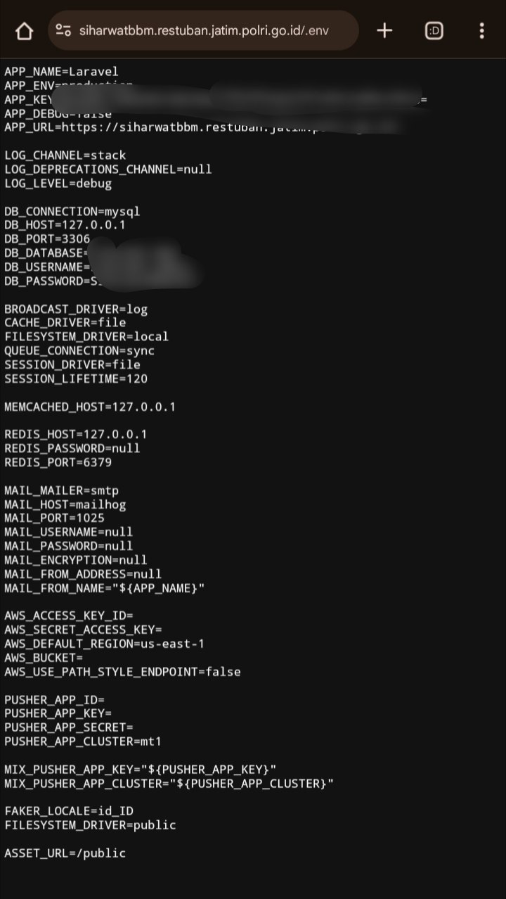

Irsyad Bayu Kurniawan — Bug Hunter
Dalam proses enumerasi subdomain dan analisis struktur aplikasi, ditemukan sebuah endpoint yang secara tidak sengaja mengekspos file konfigurasi sensitif.
File tersebut adalah .env, yang secara umum digunakan untuk menyimpan konfigurasi environment dalam aplikasi berbasis framework modern.
Target berada pada domain resmi instansi pemerintah, yang mengindikasikan bahwa sistem ini merupakan bagian dari infrastruktur operasional internal.
Aplikasi seperti ini biasanya digunakan untuk kebutuhan monitoring, manajemen data, atau integrasi layanan backend.
Saat mengakses endpoint secara langsung melalui browser, file .env dapat diambil tanpa autentikasi.
Hal ini menunjukkan adanya kesalahan konfigurasi pada web server, di mana file sensitif tidak dibatasi aksesnya.
File .env biasanya berisi:
File dapat diakses langsung melalui browser tanpa autentikasi:

Kerentanan ini biasanya terjadi karena file konfigurasi berada dalam direktori publik (web root), atau tidak adanya aturan pada server untuk memblokir akses ke file tertentu.
Pada server seperti Apache atau Nginx, file dengan ekstensi tertentu seharusnya dibatasi menggunakan konfigurasi deny rule.
.env
Kesalahan konfigurasi sederhana seperti ini dapat berdampak besar terhadap keamanan sistem.
Eksposur file .env memberikan akses langsung ke informasi sensitif yang dapat digunakan untuk kompromi lebih lanjut.
Temuan ini disusun sebagai bagian dari responsible disclosure dan tidak disalahgunakan.